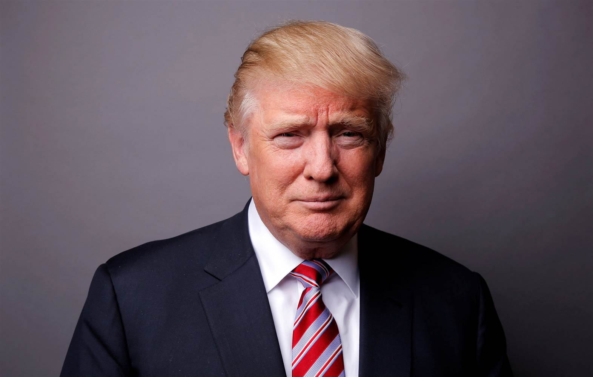

President Donald Trump’s First Executive Orders
Cameron Matsui
| WORLD
20 Feb 2017
In his first week in office, President Donald Trump signed four executive orders to begin fulfilling the promises of his campaign. Although some media outlets accuse President Trump of abusing his executive power, President Obama had signed five orders during his first week in office, one more than President Trump. But what exactly is an executive order? An executive order is a directive from the president with the same amount of power as a federal law. Although executive orders have been utilized by almost every president since George Washington, according to the Congressional Research Service, there is no definition or authorization of their issuance in the Constitution. The president’s first four executive orders have been in line with the promises of his campaign; they target the Affordable Care Act, infrastructure, and immigration.
The first order signed by the new president aims to expedite the dismantling of the Affordable Care Act. Although its language is vague, it is likely to have a significant impact on the repeal of Obamacare. President Trump intends to “[minimize] the economic burden of the Patient Protection and Affordable Care Act” (EO 13765) by allowing the heads of executive departments and agencies to use all power allowed by law to resist the act. The order also states that “[it] is the policy of [President Trump’s] administration to seek the prompt repeal of the Patient Protection and Affordable Care Act” (EO 13765).
On the sixth day of his presidency, Donald Trump signed two executive orders directed at illegal immigration, a major component from his campaign. The orders intended to strengthen border security and target illegal immigrants currently residing in the United States. The first of the two orders instructed the Department of Homeland Security to commence the building of a 1,900 mile wall on the United States’ border with Mexico. Although the construction of the wall will be funded by the federal government, both White House press secretary Sean Spicer and President Trump himself have stated that Mexico will repay the United States for the cost of its construction. Spicer has even suggested that a 20% tax on imports from Mexico could be a means of compensating the U.S. (Diamond). The second order targeting illegal immigration is titled, “Enhancing Public Safety in the Interior of the United States”, and will add 10,000 additional immigration officers, compromising “[s]anctuary jurisdictions,” or cities of refuge for illegal immigrants, that “willfully violate Federal law in an attempt to shield aliens from removal from the United States” (EO 13768).
President Trump’s first four executive orders have been in line with his campaign promises, proving that he intends to fulfill as many of them as he can. Lauren Said-Moorehouse of CNN states that there are “several more expected executive orders on trade and immigration,” which may prove to have a great impact on the future of our nation.